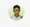

Kövesd a jelentkezéseidet, készülj fel az interjúkra
és érj el több visszajelzést – egy helyen.
Kanban nézet és szűrhető táblázat minden jelentkezésedhez.
Kérdésbank, gyakorlatok és AI visszajelzés a válaszaidra.
Valós idejű analitikák, amik segítenek jobb döntéseket hozni.
Interjúk, határidők és események egy áttekinthető naptárban.
Önéletrajzok, motivációs levelek és fájlok biztonságos tárolása.
Outreach sablonok és ötletek, amikkel kitűnhetsz a többiek közül.
Részletes statisztikák és mutatók,
amik valódi eredményeket mutatnak.
Gyakorolj kérdésekkel, és kapj AI értékelést
a válaszaidra valós időben.
Mesélj egy olyan helyzetről, amikor konfliktust kellett kezelned a csapatban.
Egy projekt során két csapattag között nézeteltérés támadt a feladatprioritások miatt. Beszéltem mindkettőjükkel külön-külön, majd közösen is, és segítettem nekik megtalálni a közös megoldást...
Átlátható irányítópult, ahol gyorsan
megtalálod, ami fontos.
